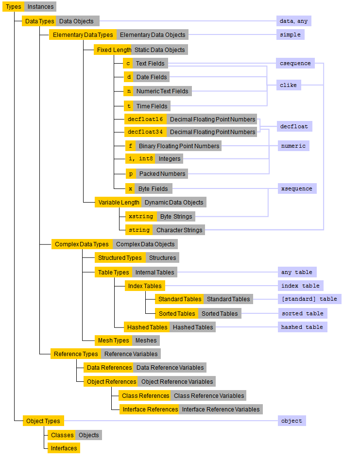

In ABAP, we distinguish between types and objects. Types are purely descriptions, to which no data memory
is attached apart from administration information. Objects are instances of types and take up memory space. A type characterizes the technical properties of all objects of the relevant type.
The ABAP types form the ABAP type hierarchy, which is illustrated below:

The left side of the graphic shows the hierarchy of all types and instances, for instance which types are possible in ABAP and the objects that can be generated from these types. The right side lists the
generic data types assigned to individual nodes of the type hierarchy.
In principle, we distinguish between data types and object types.
Data types are used to describe
data objects. They are further subdivided into elementary types, reference types, and complex types. Data types are
predefined or
they can be defined locally in the program and system-wide in ABAP Dictionary. Data objects as instances of data types are fields in their own right. They contain local program data that a program uses at runtime.
Object types are used to describe objects in
ABAP Objects. They are
divided into classes and interfaces. Object types contain the above data types, but they also contain
functions. Object types are not predefined and must be defined in the program or in the Class Library.
Classes provide a complete description of an object. They define which data types and which functions
an object contains. Interfaces describe one aspect of an object. The data types and functions of an interface can be implemented by more than one class. Objects as instances of classes are actual software objects in
ABAP Objects. They support object-oriented programming by containing methods and events in addition to data.
The following sections summarize some important facts on data types and data objects. For more information on object types and objects, see ABAP Objects.